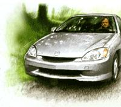
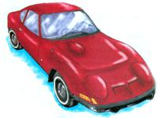
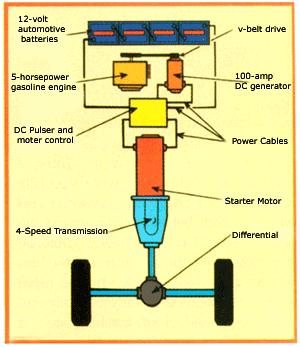

At 210,000 miles, my beloved Nissan Sentra was given a death sentence by a mechanic who found the underbody too rusted to pass the next vehicle inspection. I wasn't surprised. For the past year, the car had grown rusty boils and stains, while pieces had chipped off in my hands like tree bark. Plus, the locks now froze in the snow, the speedometer light bulb had been burned out for months and the headlights looked dim as yellow parchment against the Catskills forest at night.
I'd miss this rugged little car. Bought used, it had served me well for five years of living in a log cabin and enjoying the sort of driving experiences on wilderness roads that many Americans only know from sports utility vehicle commercials.
But nothing lasts forever. I was ready for a new car. I wanted a hybrid.
By combining an electric motor with a gasoline engine, hybrid technology enables cars to get much better gas mileage than the norm. Although every environmentalist likes the idea of better fuel economy, hybrids still are something of a novelty.
In my case, a recent trip to the Arctic National Wildlife Refuge had turned mileage into a personal issue. My girlfriend and I backpacked and rafted for 18 days through the refuge. We saw wolves and grizzlies, musk oxen and caribou migrating by the hundreds. To us, it felt like the last edge of the North American continent that our modern civilization hadn't conquered. On the 19th day, we visited the Prudhoe Bay oil complex, a military-like network of drilling pads, pipelines, gravel roads and processing plants spread across an area the size of Rhode island. If allowed to extend eastward into the refuge, the oil complex threatened to destroy the wild beauty of that landscape.
When we returned home, I began looking for a "greener" replacement for my Sentra. I'd first heard of the hybrid concept in 1996 as a journalist traveling with a solar-electric car rally from New York City to Washington, D.C. The great debate at the rally was whether hybrids would replace electrics as the green vehicle of choice.
The purists still defended electrics, confident they could overcome the problem of having to plug in and recharge their vehicles about every 100 miles. But sever al veteran "advocates persuaded me hybrids would be more practical. Yes, they'd still have polluting tailpipes, but they'd get better mileage than vehicles totally dependent on gasoline and still travel the same distances between fill-ups. Hybrids actually improve upon the performance of straight gasoline vehicles because their electric motors provide more power and acceleration.
When I went shopping for my replacement car, I found two hybrid choices: the Toyota Prius and the Honda Insight. (After Nixon wrote this article, Honda released its hybrid Civic model. For more information on current and future hybrids, see "Greener Cars and Trucks," Page 46.-MOTHER) For professional critics, the choice was clear. National Public Radio's "Car Talk" brothers raved about the Prius on their Web site: "It's a tree-hugger's dream that anyone could be happy with," they said, unlike the Insight, which "makes too many compromises." Consumer Reports found the Prius "a viable alternative to any small sedan," while the "Insight's ride is stiff, its handling less than nimble, and its cabin very noisy."
Through my e-mail network, I found friends who had owned a Prius for a year. They drove the same mountain roads I did and shared my environmental sentiments. They loved their Prius, and that was a strong endorsement. I accepted their invitation to take the car out for a spin and soon sat in the lap of luxury.
The hybrid moment came at a stop sign when the gas engine turned itself off to save a sip of fuel. The Prius idled as silently as an electric clock. "We haven't stalled," my friend reassured me. "Just press the gas pedal." The engine purred again. From there, he directed me to the bottom of a, steep hill to prove the car was as powerful as any other sedan. He was tight: The Prius shot uphill so fast my foot never quite reached the floor.
To be a savvy consumer, however, I decided to drive an Insight for comparison. At the local Honda dealership, I found one in the lot, still half-wrapped from the factory with brown paper covering the hood. Unlike the Prius, which resembled a conventional sedan except for its shortened hood, the Insight looked futuristic: part sports coupe, part hatchback and very aerodynamic. Later, I learned the Insight's front wheels actually are spread 4 inches wider than the rear wheels, which helps air flow around the tapered body. The most striking difference from other cars, though, was that the rear wheels were largely hidden behind metal covers that blended in with the body and prevented wind from catching in the wheel wells. It gave the Insight a diminutive appearance compared to many vehicles that show off their big tires as a sign of ruggedness.
To a sedan owner like myself, the Insight looked small. If this car was basically an aerodynamic cockpit, I couldn't afford it. I needed the storage space and the sturdiness of a conventional car. The hatchback didn't look promising for space, and the metal skirt below the bumpers and doors made the car sit so low that I wondered if it would scrape every rock on dirt roads.
The Honda salesman invited me to crouch down and compare my Sentra's clearance. The Insight wasn't any lower, he explained, it just looked that way because of its aerodynamic body skirt. I had to admit he was right. Buckled in the driver's seat, I didn't find the Insight so small after all. I did sit lower than I sat in my Sentra, but I had more leg room.
During the test drive, I spotted the miles-per-gallon number in liquid crystal green on the instrument display panel. In the past, I'd met mileage nerds who kept a notebook in the glove compartment to record fill-ups and odometer readings in order to calculate mpg for themselves, but this car does the math for you. So far, the Insight had gotten 48.1 mpg from the dealer's lot to the highway entrance ramp. Noticing my fascination, the salesman had me push a button that switched the reading from a digital number to a bar graph that pulsed back and forth, giving the mpg at that moment. Shifting from second to third gear on the entrance ramp, I saw my mpg slip to 30, but after entering traffic and reaching cruising speed, I eased off the gas and saw it shoot to 150 and stay there. I hadn't been so amazed by a machine since the first time I logged onto the Internet.
By combining an electric motor with a gasoline engine, hybrid technology enables cars to get much better fuel mileage than the norm.
Back at the Honda lot, I asked the salesman to open the hatchback. I needed to be reminded of why I shouldn't buy this car. It didn't have a trunk. It didn't have a rear seat. It wouldn't be practical for my life in a log cabin in the mountains where the local guys drove pickup trucks.
But the carpeted storage space was roomier than I expected. And the salesman lifted a lid in the floor to reveal a sunken storage box as large as a beach cooler. What did I load in my Nissan Sentra anyway? The truth was, as a bachelor, I'd probably driven 115,000 miles by myself, and another 5,000 with my girlfriend. How many times had I carried a third or fourth passenger? A dozen? Most of the time, my storage space had been dead weight.
I also compared the specs: The U.S. Environmental Protection Agency rated the Insight at 61 mpg for city driving and 68 mpg for highway driving, while it rated the Prius at 52 mpg urban, 45 mpg highway. (Later, I learned these EPA figures are inflated by some old-fashioned assumptions about our driving habits, such as the idea that we average 48 mph on the highway, which may have been true in the 70s. Today, the average is closer to 60 mph.)
But the critics loved the Prius. My friends loved the Prius. I needed to talk with someone who drove an Insight in the real world. Through my environmental contacts, I finally found someone: A solar entrepreneur who lived a mile up a dirt road in Maine. Over the phone, he didn't sound impressed by my concerns. "I've never put on my chains," he said, apparently insulted I would question the Insight's handling in snow. As for storage, he and his wife easily had stowed their gear in the hatchback for a 10-day vacation that summer. And if I lacked the conviction to choose the Insight, he certainly hoped I wouldn't buy a Prius.
"Why not?" I asked. Who could dislike the Prius? Besides the oil companies?
"It's full of compromises," he said. "It only gets 48 mpg." And he proceeded to explain how this sedan had sacrificed mileage performance for luxury. "Actually," he continued, "I'd get better mileage with a diesel car, such as a Volkswagen Jetta or Golf. Of course, diesels have terrible tailpipe emissions, but I could easily clean up that problem by converting the car to run on biodiesel, thereby cutting my unburned hydrocarbon emissions by 93 percent."
"Where would I find biodiesel?" I asked. "At my Web site," he answered. Through the wonders of online shopping, I could order 55-gallon drums of biodiesel, which would be delivered by truck to my driveway. I can't say his proposal didn't have some appeal. The promise of greater self-sufficiency often does. I already lived in a log cabin with my own well for drinking water, my own wood stove for heat and my own sewage system. Why not tell the oil sheiks to stuff it?
But the idea of becoming my own filling station had problems. First, I shared the driveway with my neighbor, who'd been so nasty the time he found a cord of firewood dumped for me that I could only imagine his fury at a permanent row of barrels. Second, I was the sort of negligent shopper who routinely let my refrigerator sit empty for a week. With biodiesel, I couldn't very well recover from my absent-mindedness by using a local filling station until my fuel shipment arrived.
So I bought an Insight. And I got lucky by finding a used one, only 10 months old with 14,700 miles, yet $5,000 less than the new model I tested. As an owner, I've learned a few more things about this car. For example, the electric motor isn't really the secret to its high mileage. Rather, the Insight is much more aerodynamic and much lighter than conventional cars because it is constructed with aluminum body parts (a steel framework within protects passengers).
With only three cylinders, the gasoline engine happens to be the smallest you can find in a car, yet it's so efficient that it produces 20 percent more power (for its size) than the engines in most new cars. The hybrid's engine can afford to be this small because the electric motor boosts it through weak spots.
I admit it: I've become a mileage nerd with my own notebook in the glove compartment. After 20,000 miles in this past year, I can report that the Insight's best fill-up came in Tennessee after several long, hot days on the interstate when a tankful finished at 68.3 mpg. Its worst-54.5 mpg-arrived in November after two weeks of toddling around town in cold weather. Usually, I get from 58 to 63 mpg, depending on the weather and the amount of highway driving.
The only person to complain has been my girlfriend. I've overheard her with friends: "What does he say when he walks in the door? Not, 'Honey, I'm home!' No. He says, '62.3!"' But I know what she really means: "When are you going to lend me the keys?"
Will Nixon is an essayist and poet who lives in the Catskill Mountains of New York. You can read more of his writing online at www.mycabinfever.com.
Gearheads and grease monkeys rejoice: Dave Arthur's Hybrid-Electric Car Plan, first published by MOTHER more than 20 years ago, is available again!
Twenty years before Honda and Toyota introduced their hybrid-electric cars to the public, Mother Earth News was publishing stories on the need for more fuel-efficient, less polluting vehicles. (You can read those stories at our new online archive at http://www.motherearthnews.com .) One article profiled Dave Arthur, who built his own hybrid-electric car to protest soaring prices at the fuel pumps.
Arthur's plans give details on building a hybrid-electric car using a 1970s-era car or truck. Various mechanical changes, including a chassis upgrade, rewiring and differential modifications, are necessary; advanced mechanical skills are required.
Order Arthur's plan (Item No. 1764) for $25 by using the order form on Mote's Bookshelf, Pie 122; by calling (866) 803-7096 or online at http://www.motherearthnews.com .
Mother Earth News
|
 |
 |
 |